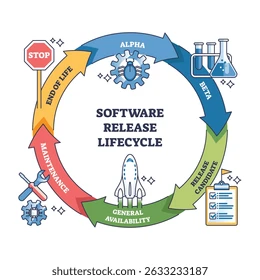

6:00 am - 8:00 am
8:00 am - 10:00 am
10:00 am - 12:00 pm
12:00 pm - 2:00 pm
2:00 pm - 4:00 pm
4:00 pm - 6:00 pm
Lunes
Derechos Fundamentales
Se identifican los diferentes derechos y deberes que tienen las ingresados en su rol de aprendizes y esto se logra a travez de el estudio de la historia economia y politica
Martes
Especificaciones Tecnicas
A travez del estudio y comprension de diferentes tematicas se logra identificar diferentes tecnicas de programacion y expresion del aplicativo enfocado a la web
Miercoles
Determinar Interfaz Grafica

Con la guia del instructor se comprende y aplica el buen uso de la herramientas HTML y CSS para lograr una interfaz grafica funcional en el aplicativo
Ingles

A travez de actividades y ejercicios se comprende de mejor manera la fonetica y uso de la gramatica en textos o imagenes para tener un mejor desenvolvimiento en proyectos internacionales
Jueves
Codificacion Python
Utilizando PYTHON FLASK se busca aumentar el conocimiento en herramientas de programacion rapida y efectiva para la ejecucion mejorada del aplicativo basado en la web
Viernes
Construccion de Bases de Datos

Utilizando una terminal se busca crear y comprender las bases de datos funcionales para que el aplicativo basado a la web que permita importar y exportar distintos datos guardados
Sabado
Modelado de funciones
En este modelado se quiere comprender la vida util del software y su uso efectivo en aplicativos web con el fin de que dicho aplicativo siempre tenga el software mas actualizado
